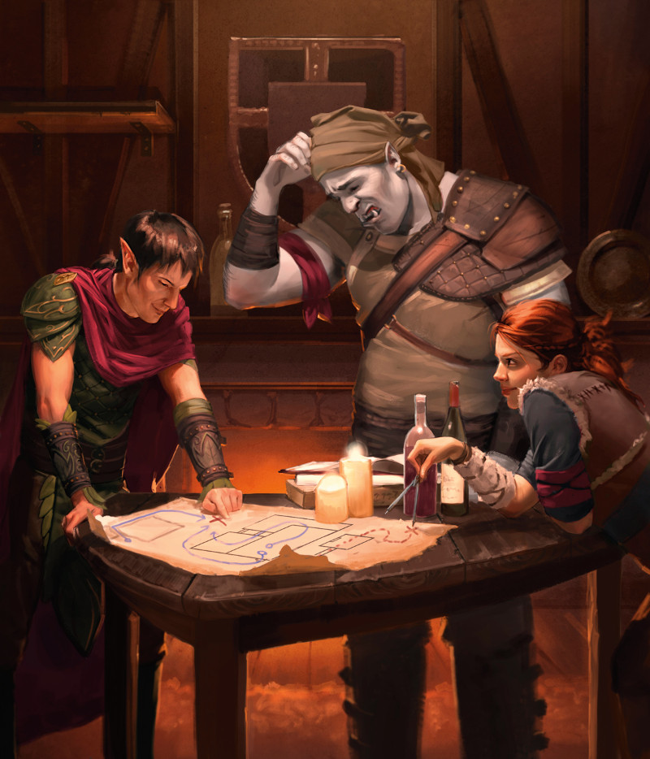

Les races de D&D 5 pour les nuls
Pour jouer à D&D, vous devrez créer un personnage qui participera aux aventures que votre MD vous a préparées. Avant même de choisir votre classe, vous devez sélectionnez la race de votre personnage. D&D 5 propose une grande variété d'ascendances parmi lesquelles choisir, et chacune offre des capacités différentes qui rendent votre personnage unique.
Vous trouverez ci-dessous un aperçu rapide de chacune des races disponibles dans le Manuel des Joueurs, afin de pouvoir prendre une décision éclairée.
Drakéide
Les drakéides sont les descendants de puissants dragons et sont généralement décrits comme de puissants héros martiaux qui valorisent grandement leurs clans. Ils ressemblent à des reptiliens et obtiennent une arme de souffle basée sur le type de dragon auquel leur lignée est liée. Vous voulez cracher du feu sur vos ennemis ? Alors vous aimerez jouer un drakéide dont la lignée provient de dragons rouges !
Bonnes raisons pour jouer cette race
- Vous devenez un quasi-dragon. Bien sûr, vous n'avez pas d'ailes, mais vous êtes bien draconique !
- Les drakéides ont des armes de souffle. Selon votre ascendance draconique, vous pouvez choisir parmi une grande variété de types de souffle, allant du souffle de feu traditionnel des dragons rouges au souffle empoisonné des dragons verts. Votre souffle inflige 2d6 dégâts en cas d'échec au jet de sauvegarde (le DD est de 8 + votre modificateur de Constitution + votre bonus de maîtrise), ou la moitié en cas de réussite, et évolue lentement au fur et à mesure que vous montez de niveau.
- Les drakéides résistent au type de dégât associé à leur ascendance. Donc, si vous crachez du feu, vous avez la résistance aux dégâts de feu.
À savoir tout de même
- Le drakéide n'a pas la vision dans le noir, que possèdent les dragons ordinaires et la plupart des autres races du Manuel des Joueurs.
- Le souffle du drakéide utilise une action entière et ne peut être utilisé qu'une seule fois par repos court ou long. Certains joueurs soutiennent que ses dégâts sont faibles, en particulier lorsque les ennemis effectuent leurs jets de sauvegarde.
Demi-elfe
Les demi-elfes sont une face du trope fantastique de « l'entre deux », les demi-orcs étant l'autre face. Souvent, les demi-elfes ne sont pas entièrement acceptés par les humains ni par leurs frères elfes, mais certains parviennent tout de même à exister sans effort dans ces deux mondes, comme des caméléons culturels. Mais cette race convient surtout à la plupart des classes grâce à des traits qui reflètent leurs moitiés humaine et elfique.
Bonnes raisons pour jouer cette race
- Les demi-elfes bénéficient de la flexibilité des humains, ainsi que de l'ascendance féerique et de la vision dans le noir des elfes. Cela signifie qu'ils ne peuvent pas être charmés ou endormis par magie, qu'ils ont la capacité de voir dans le noir et qu'ils commencent en maîtrisant deux compétences de leur choix.
- Les demi-elfes ont une grande polyvalence grâce à leur capacité d'Augmentation de caractéristiques. Ils obtiennent une augmentation du Charisme de +2 (ce qui en fait un bon choix pour les classes basées sur le Charisme comme les bardes et les occultistes) et ils peuvent augmenter de +1 n'importe quelle autre caractéristique de leur choix.
À savoir tout de même
- À moins que vous ne jouiez un lanceur de sorts qui s'appuie sur le Charisme ou que vous vouliez un personnage doué pour les rencontres sociales, le bonus de Charisme pourrait être perdu.
Demi-orc
Les demi-orcs sont l'autre côté du trope de « l'entre deux ». Contrairement aux elfes, cependant, les orcs ont traditionnellement été dépeints comme des méchants à D&D. La cinquième édition en apporte une représentation plus nuancée, mais de nombreux demi-orcs portent encore sur eux les stigmates de la façon dont la société traite leur côté orc. Pour ceux qui veulent incarner une puissance martiale ou un personnage ayant une relation complexe avec son héritage, les demi-orcs sont la voie à suivre.
Bonnes raisons pour jouer cette race
- Les demi-orcs sont extrêmement robustes et Endurance implacable est l'un de leurs meilleurs traits. Une fois par repos long, si un demi-orc tombe à 0 point de vie et n'est pas tué sur le coup, il repasse à 1 point de vie. Cette capacité peut faire passer d'une défaite assurée à une victoire in extremis.
- Attaques sauvages est un autre excellent trait qui permet aux demi-orcs de lancer un dé de dégâts d'une arme une deuxième fois et de l'ajouter aux dégâts supplémentaires d'un coup critique.
À savoir tout de même
- Les demi-orcs à D&D sont limités aux hybrides humains/orcs, tout comme les demi-elfes. Les éditions précédentes de D&D laissaient entendre que de nombreux demi-orcs étaient le résultat d'unions involontaires – un choix troublant qui a été largement revu ces derniers temps.
- Le Manuel des Joueurs dit que les demi-orcs sont aux prises avec des tendances maléfiques du fait de l'influence persistante de Gruumsh, le dieu qui a créé les orcs. Les joueurs intéressés par les demi-orcs doivent se méfier de ce stéréotype et ne le suivre que s'ils le souhaitent.
- Les nouveaux joueurs pourraient se demander pourquoi les orcs de sang pur ne sont pas répertoriés en tant que race dans le Manuel des joueurs, puisque les elfes et les demi-elfes sont présents. La réponse simple est que les orcs ont traditionnellement été les « méchants ».
Elfe
Les elfes sont la race de D&D qui possède la plus longue longévité. La plupart des elfes possèdent une beauté éthérée rappelant celle de la Féérie, ainsi que le potentiel d'exceller dans les activités martiales et magiques. Il existe trois sous-races d'elfes dans le Manuel des Joueurs : les hauts elfes (qui se spécialisent dans la magie), les elfes des bois (qui ont une relation profonde avec la nature) et les drows (des habitants souterrains qui se sont adaptés à un monde sans lumière).
Bonnes raisons pour jouer cette race
- Les elfes vivent très longtemps. Un elfe n'atteint l'âge adulte qu'à 100 ans et vit jusqu'à 750 ans. Cette longévité implique que certains effets de monstres qui provoquent le vieillissement - comme le Visage effroyable du fantôme - sont relativement inoffensifs pour un elfe.
- Les elfes n'ont pas besoin de dormir. Ils peuvent bénéficier d'un repos long à partir de seulement 4 heures de méditation. Cela signifie que vous pouvez passer plus de temps la nuit à surveiller les ennemis ou à effectuer d'autres tâches.
- Deux des trois sous-races d'elfes commencent avec de la magie. Les hauts elfes peuvent choisir un sort mineur de magicien de leur choix, tandis que les drows commencent avec le sort mineur es lumières dansantes et apprennent lueurs féeriques et ténèbres au fur et à mesure qu'ils progressent.
À savoir tout de même
- Si vous jouez un drow, soyez conscient de sa Sensibilité au soleil, qui désavantage les jets d'attaque et les jets de Sagesse (Perception) en plein soleil. Le statut de longue date de cette sous-race en tant qu'elfes maléfiques, incarné par la dure culture de la ville drow de Menzoberranzan, est également quelque chose dont il faut se méfier, bien que l'héroïque Drizzt Do'Urden prouve que les nobles drows sont présents dans le monde.
- Comme les nains, les elfes sont peut-être les races les plus traditionnelles de D&D. Ceux qui sont habitués à la représentation typique de l'elfe distant qui n'interfère pas avec les problèmes du monde pourraient trouver ces individus ennuyeux. Mais il ne tient qu'à vous de créer un personnage unique qui défie ces tropes.
Gnome
Les gnomes sont des bricoleurs, des inventeurs et des amoureux de la vie. Ils aiment tirer le meilleur parti de leurs années, et parmi toutes les races du Manuel des Joueurs, les gnomes possèdent sans doute l'humour et la fascination les plus contagieux. Les gnomes ont deux sous-races : les gnomes des forêts qui habitent dans les zones boisées et se lient d'amitié avec les animaux, et les gnomes des roches qui sont des artisans inventifs et experts.
Bonnes raisons pour jouer cette race
- Les gnomes ont un certain nombre de traits solides dès le départ. Ils sont la race qui possède la deuxième plus longue longévité dans le Manuel des Joueurs et ont la vision dans le noir et Ruse gnome, qui confère un avantage à tous les jets de sauvegarde d'Intelligence, de Sagesse et de Charisme contre la magie.
- Les gnomes des forêts gagnent illusion mineure en tant que sort mineur gratuit, une augmentation de la Dextérité de +1 et la capacité de parler avec de petits animaux. Ce sont tous de bons traits pour un rôdeur qui arpente les forêts ou un druide qui aime communier avec la nature.
- Les gnomes des roches peuvent construire plusieurs mécanismes, dont un allume-feu, une boîte à musique ou un jouet mécanique. Ceux-ci peuvent servir pour de savoureuses séquences de jeu de rôle ainsi que de pratiques outils pour distraire les ennemis au milieu d'une aventure !
À savoir tout de même
- Comme les nains et les halfelins, un gnome a une vitesse de déplacement lente de 7,50 mètres.
- Les gnomes reçoivent un boost en Intelligence de +2, ce qui est merveilleux pour les magiciens mais moins bien pour la plupart des autres classes.
Halfelin
Les halfelins sont des gens doux tout droit sortis de The Hobbit qui apprécient les plaisirs du foyer. Les halfelins qui prennent la route ont tendance à être des défenseurs de leurs communautés ou à avoir envie de voyager. Si vous avez rêvé de jouer le rôle de Bilbo ou de Frodon Sacquet, ou si vous voulez incarner un personnage de taille P qui cherche à défier les attentes dans un monde pour les grands, les halfelins sont la race pour vous. Il y a deux sous-races de halfelins dans le Manuel des Joueurs. L'une davantage orientée vers la furtivité, et l'autre davantage vers la robustesse.
Bonnes raisons pour jouer cette race
- Les halfelins peuvent éviter les jets catastrophiques grâce à leur trait Chanceux, qui leur permet de relancer un 1 sur le d20 pour un jet d'attaque, de caractéristique ou de sauvegarde.
- Les halfelins ont un avantage aux jets de sauvegarde contre la peur. De plus, si vous choisissez la sous-race des halfelins robustes, vous aurez un avantage aux jets de sauvegarde contre le poison, ainsi que la résistance contre les dégâts du poison.
- Les halfelins pied-léger font d'excellents roublards grâce à leur capacité Discrétion naturelle, qui leur permet de se cacher s'ils sont masqués par une créature d'une taille plus grande. Combinez cela avec le trait Agilité halfeline, qui permet de se déplacer dans l'espace de n'importe quelle créature plus grande, et vous obtenez un incroyable petit acrobate qui peut traverser tout le champ de bataille.
À savoir tout de même
- Comme les nains et les gnomes, les halfelins ont une vitesse de déplacement lente de 7,50 mètres. Cette vitesse plus faible sera perceptible si vous jouez un personnage au corps à corps et devez combler l'écart avec les ennemis.
Humain
Les humains sont la race la plus peuplée et la plus explicite de D&D. Leur courte durée de vie par rapport aux races qui possèdent une longue longévité signifie que les humains sont souvent les moteurs et les agitateurs qui propulsent les événements dramatiques du monde en avant. Les humains peuvent sembler ennuyeux, mais si votre MD vous permet de jouer avec la variante humaine, la capacité de prendre un don au niveau 1 est incroyablement bonne. De plus, parfois, la meilleure façon de se démarquer dans un groupe d'aventuriers rempli de toutes sortes de créatures colorées est de choisir l'option apparemment « banale ».
Bonnes raisons pour jouer cette race
- Les humains ont des statistiques solides dans tous les domaines, leurs caractéristiques augmentant chacune de +1.
- Les humains avec la variante peuvent renoncer à augmenter chacune de leurs caractéristiques de +1 pour augmenter seulement deux d'entre-elles de +1, acquérir la maîtrise d'une compétence et un don.
- La diversité des humains est inégalée et leur capacité à s'intégrer dans n'importe quel monde de D&D en fait la race la plus flexible du point de vue de la formulation de l'histoire.
À savoir tout de même
- Les humains n'ont aucun des traits spéciaux des autres races. Pas de souffle magique, pas de magie innée, pas de grande longévité et pas de vision dans le noir. En d'autres termes, ils sont basiques, en particulier dans un jeu où la variante des humains n'est pas autorisée.
Nain
Les nains de D&D possèdent un talent pour l'exploitation minière et un amour pour leurs clans et leurs royaumes, qui s'étendent loin sous la terre. Les nains sont parfaits pour les classes martiales, bien que les lanceurs de sorts nains soient aussi courants. Les sous-races du Manuel des Joueurs comprennent le nain des collines et le nain des montagnes. Les nains des collines ont une Sagesse et des points de vie plus élevés. Les nains des montagnes bénéficient d'une plus grande Force.
Bonnes raisons pour jouer cette race
- Les nains peuvent subir beaucoup de dégâts. Leur Constitution augmente de +2, la Résistance naine leur donne un avantage aux jets de sauvegarde contre le poison et la résistance contre les dégâts de poison. Le trait Robustesse naine des nains des collines confère également une augmentation maximale des points de vie de 1 à chaque niveau.
- Les nains commencent avec la maîtrise de nombreuses armes qui manquent aux autres races, y compris des armements puissants comme la hache de guerre et le marteau de guerre. Un magicien nain qui n'a plus d'emplacements de sorts ne sera jamais impuissant tant qu'un bon marteau se trouve à proximité.
- Si vous vous lancez dans une campagne d'exploration de donjons comme Waterdeep : Dungeon of the Mad Mage ou une aventure souterraine comme Out of the Abyss, un nain est un choix pratique grâce à sa vision dans le noir et son trait Connaissance de la pierre, qui lui permet de discerner l'origine d'un travail lié à la pierre.
À savoir tout de même
- Alors que les nains font de bons druides, clercs et magiciens, si vous voulez jouer un occultiste ou un ensorceleur, gardez à l'esprit que les nains ne reçoivent pas de bonus de Charisme, ce qui est important pour ces classes.
- Avec une vitesse de 7,50 mètres et un accent mis sur la Force et la Constitution plutôt que sur la Dextérité, les nains sont moins agiles que les autres races.
Tieffelin
Les tieffelins sont des individus qui ont le sang de diables dans leurs veines, souvent en raison de pactes conclus entre leurs ancêtres et divers habitants des Neuf Enfers. Dotés généralement de cornes et de queues qui révèlent leurs origines diaboliques, les tieffelins doivent faire face aux mêmes problèmes que les demi-orcs. Néanmoins, ces enfants d'Asmodée sont des gens très charismatiques qui parviennent généralement à déjouer les autres par le charme ou la ruse.
Bonnes raisons pour jouer cette race
- Grâce à leur lignée infernale, tous les tieffelins ont la résistance aux dégâts de feu ainsi que la vision dans le noir, sans parler de coquettes cornes et d'une queue !
- Les tieffelins obtiennent une augmentation de l'Intelligence de +1 et une augmentation du Charisme de +2, ce qui en font d'excellents lanceurs de sorts. Un tieffelin occultiste ou ensorceleur est une combinaison courante, tout comme un tieffelin barde ou magicien.
- Les tieffelins ont une maîtrise innée de certaines magies, à commencer par l'utile sort mineur thaumaturgie. Au niveau 3, ils peuvent lancer représailles infernales comme un sort de niveau 2, et au niveau 5 ils peuvent lancer ténèbres. Ces deux sorts ne peuvent être utilisés qu'une seule fois par repos long, mais sont d'excellents cadeaux.
À savoir tout de même
- Bien que le bonus de Charisme et d'Intelligence soit pratique pour de nombreuses classes, l'absence de bonus de Constitution ou de Dextérité signifie que vous êtes susceptible d'être moins robuste et moins adroit que les autres personnages du groupe.
- Comme pour les drows et les demi-orcs, les tieffelins peuvent susciter une certaine méfiance dans les contextes traditionnels de D&D, et le Manuel des Joueurs indique que beaucoup deviennent amers voire méchants à cause de ce préjugé. Comme toujours, rappelez-vous que votre personnage tieffelin sera celui que vous voulez qu'il soit, pas ce que la tradition dicte.

Basé sur un article de Jeremy Blum, traduit par blueace